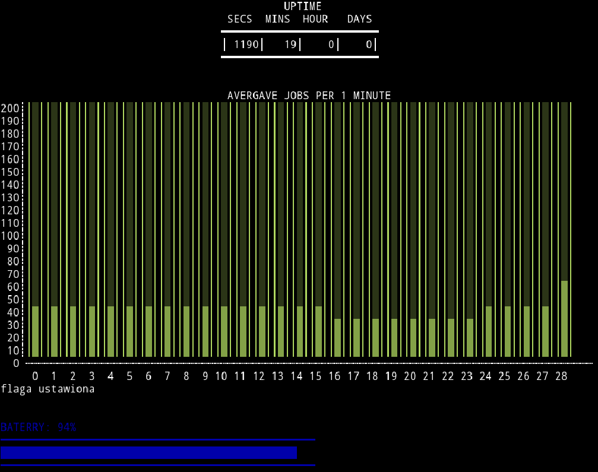

Falling Doom
Prosta gra mobilna na platformę Android, będąca połączeniem Arkanoida i Ponga. Napisana w języku C# na silniku UnityEngine.Gra typu beat the score. Celem jest jak najdłuższe przeżycie, co można dokonać niszczac kolejne spadające bloki.


Przykładowy kod programu
private void TouchPositionHandle(Vector3 position) { if (Input.touchCount > 0) { Touch myTouch = Input.touches[0]; var touchPos = myTouch.position.x / Screen.width * 9 + 3.5f; position.x = Mathf.Clamp(touchPos, 4.8f, 11.2f); this.transform.position = Vector3.Lerp(transform.position, position, Time.timeScale * paddleSpeed); } }
Trylma
Gra desktopowa Trylma, czyli tak zwane chińskie szachy.
Pisana w języku Java, do GUI wykorzystuje technologie JavaFX.
Można grać multiplayer(LAN), lub ze sztuczną inteligencją.

Przykładowy kod programu
Obserwator nowo tworzonych serwerów:public void listenToGames(Model model) { model.getRunningPorts().addListener((ListChangeListener.Change<? extends Integer> change) -> { while (change.next()) { if (change.wasAdded()) { for (Integer i : change.getAddedSubList()) { System.out.println("Detected running port: " + i); menuOptionController.updateAvaibleGames(); } } } }); }
Cpuinfo
Skrypt BASHa na systemy Linux. Pokazuje użycie zasobów, stan baterii oraz uptime.

Przykładowy kod programu
Stan baterii:
function showBattery() { printf "BATERRY: %s\n" $1% printf "─%.0s" {1..50} echo i=0 let "a= $1 / 2" while [ "$a" -gt "$i" ]; do printf "█" ((i++)) done echo printf "─%.0s" {1..50} printf "\n" }
Ustawianie kolorów baterii:
function setBatteryColor() { if [ "$1" -lt 30 ]; then tput setaf 226 #yellow if [ "$1" -lt 7 ]; then tput setaf 1 #red fi else tput setaf 4 #blue fi }
Color Diary
Multiplatformowa aplikacja do zarządzania/planowania dnia. Aktualnie w fazie planowania.
Inne projekty...
Dostępne na repozytorium github.